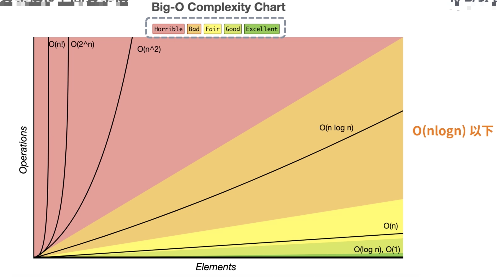
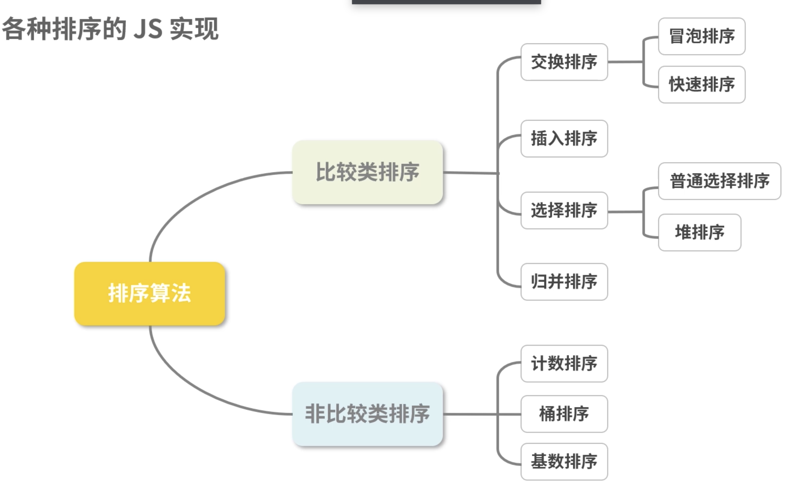

讲解数组排序的各种方法。
问题1：
数据结构中稳定的排序算法有哪些？不稳定的排序算法有哪些？问题2：
时间复杂度和空间复杂度分别代表了什么？时间复杂度和空间复杂度
时间复杂度
说的更多的是通过 o(nlogn) 以及 o(n) 等来衡量，其实大多数时候我们对此并未建立形象的认识，到底哪一种算法更快、更好呢？

空间复杂度
对一个算法在运行过程中临时占用存储空间大小的度量
有的算法需要占用的临时工作单元数与解决问题的规模有关，如果规模越大，则占的存储单元越多。
各种排序的 JS 实现
比较类排序
通过比较来决定元素间的相对次序，其时间复杂度不能突破o(nlogn)，因此也称为非线性时间比较类排序
非比较类排序
不通过比较来决定元素间的相对次序，它可以突破基于比较排序的时间下界，以线性时间运行，因此也称为线性时间非比较类排序

冒泡排序
冒泡排序是最基础的排序，一般在最开始学习数据结构的时候就会接触它
var a = [1,3,6,3,23,76,1,34,222,6,456,221];
function bubbleSort(array) {
const len = array.length
if (len < 2) return array
for (let i = 0; i < len; i++) {
for (let j = 0; j < i; j++) {
if (array[j] > array[i]) {
const temp = array[j]
array[j] = array[i]
array[i] = temp
}
}
}
return array
}
bubbleSort(a);
快速排序
通过一趟排序，将待排记录分隔成独立的两部分，其中一部分记录的关键字均比另外一部分关键字小，则可以分别对这两部分记录继续进行排序
var a = [1,3,6,3,23,76,1,34,222,6,456,221];
function quickSort(array) {
var quick = function(arr) {
if (arr.length <= 1) return arr
const len = arr.length;
const index = Math.floor(len >> 1)
const pivot = arr.splice(index,1)[0]
const left = []
const right = []
for (let i = 0; i < len; i++) {
if (arr[i] > pivot) {
right.push(arr[i])
} else if (arr[i] <= pivot) {
left.push(arr[i])
}
}
return quick(left).concat([pivot], quick(right))
}
const result = quick(array)
return result
}
quickSort(a);
插入排序
插入排序算法描述的是一种简单直接的排序算法，它的工作原理是通过构建有序序列，对于未排序数据，在已排序序列中从后向前扫描，找到相应位置并插入
var a = [1,3,6,3,23,76,1,34,222,6,456,221];
function insertSort(array) {
const len = array.length
let current
let prev
for (let i = 1; i < len; i++) {
current = array[i]
prev = i - 1
while (prev >= 0 && array[prev] > current) {
array[prev + 1] = array[prev]
prev--
}
array[prev + 1] = current
}
return array
}
insertSort(a);
选择排序
选择排序是一种简单直观的排序算法
首先将最小的元素存放在序列的起始位置，再从剩余未排序元素中寻找最小元素，然后放到已排序的序列后面，以此类推
var a = [1,3,6,3,23,76,1,34,222,6,456,221];
function selectSort(array) {
const len = array.length
let temp
let minIndex
for (let i = 0; i < len; i++) {
minIndex = i
for (let j = i + 1; j < len; j++) {
if (array[j] <= array[minIndex]) {
minIndex = j
}
}
temp = array[i]
array[i] = array[minIndex]
array[minIndex] = temp
}
return array
}
selectSort(a);
堆排序
堆排序是指利用堆这种数据结构所设计的一种排序算法
堆积是一个近似完全二叉树的结构，并同时满足堆积的性质，即子节点的键值或索引总是小于（或者大于）它的父节点
堆的底层实际上就是一棵完全二叉树，可以用数组实现
var a = [1,3,6,3,23,76,1,34,222,6,456,221];
function heap_sort(arr) {
var len = arr.length
var k = 0
function swap(i,j) {
var temp = arr[i]
arr[i] = arr[j]
arr[j] = temp
}
function max_heapify(start, end) {
var dad = start
var son = dad * 2 + 1
if (son >= end) return
if (son + 1 < end && arr[son] < arr[son + 1]) {
son++
}
if (arr[dad] <= arr[son]) {
swap(dad, son)
max_heapify(son, end)
}
}
for (var i = Math.floor(len / 2) - 1; i >= 0; i--) {
max_heapify(i, len)
}
for (var j = len - 1; j > k; j--) {
swap(0, j)
max_heapify(0, j)
}
return arr
}
heap_sort(a);
归并排序
归并排序是建立在归并操作上的一种有效的排序算法
该算法是采用分治法的一个非常典型的应用
将已有序的子序列合并，得到完全有序的序列，先使每个子序列有序，再使子序列短间有序。若将两个有序表合并成一个有序表，称为二路归并
var a = [1,3,6,3,23,76,1,34,222,6,456,221];
function mergeSort(array) {
const merge = (right,left) => {
const result = []
let il = 0
let ir = 0
while (il < left.length && ir < right.length) {
if (left[il] < right[ir]) {
result.push(left[il++])
} else {
result.push(right[ir++])
}
}
while (il < left.length) {
result.push(left[il++])
}
while (ir < right.length) {
result.push(right[ir++])
}
return result
}
const mergeSort = array => {
if (array.length === 1) { return array }
const mid = Math.floor(array.lenghth / 2)
const left = array.slice(0, mid)
const right = array.slice(mid, array.length)
return merge(mergeSort(left), mergeSort(right))
}
return mergeSort(array)
}
mergeSort(a);
归并排序是一种稳定的排序方法
归并排序的性能不受输入数据的影响，但表现比选择排序好的多，代价是需要额外的内存空间
总结
| 排序算法 | 时间复杂度（平均） | 空间复杂度 | 稳定性 |
|---|---|---|---|
| 冒泡排序 | o(n^2) | o(1) | 稳定 |
| 快速排序 | o(nlogn) | o(nlogn) | 不稳定 |
| 插入排序 | o(n^2) | o(1) | 稳定 |
| 选择排序 | o(n^2) | o(1) | 不稳定 |
| 堆排序 | o(nlogn) | o(1) | 不稳定 |
| 归并排序 | o(nlogn) | o(n) | 稳定 |